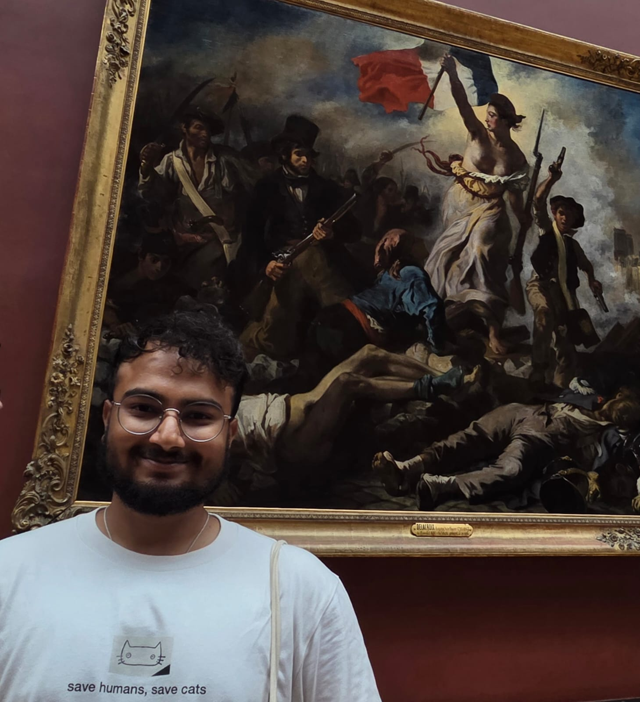

Cell & tissue dynamics
Quantifying rearrangements, local organization and collective behaviour from microscopy and image-derived data.
PhD student · Computational biophysics & complex systems
Laboratoire Adhésion et Inflammation (LAI)
Laboratoire d'Informatique et des Systèmes (LIS)
Institut de Biologie du Développement de Marseille (IBDM)

About
I am a PhD student at Aix-Marseille University working on DEep-Learning TEnsors of cell rearrangements (DELETE). My doctoral research develops quantitative and computational approaches to characterize cell and tissue rearrangements from imaging data.
Before my PhD, I worked on synchronization and collective dynamics in multiplex adaptive networks, and on machine-learning approaches for astrophysical data analysis.
Research
Quantifying rearrangements, local organization and collective behaviour from microscopy and image-derived data.
Building physical and statistical descriptions that connect local events to emergent tissue-scale dynamics.
Developing reproducible scientific workflows for feature extraction, modelling and data-driven inference.
Adaptive networks, synchronization, collective dynamics and nonlinear phenomena in interacting systems.
Selected publications
Akash Yadav, Qazi Saaheelur Rahaman, V. K. Chandrasekar, D. V. Senthilkumar
DOI ↗Akash Yadav, Qazi Saaheelur Rahaman, V. K. Chandrasekar, D. V. Senthilkumar
DOI ↗Highlights
Poster presentation · ICISE Soft Matter Conference, Vietnam
Participant · CENTURI Hackathon, Marseille
Participant · SCHADOC Doctoral School Spring School
Poster · EMBO Conference: AI and Biology, EMBL Heidelberg
Workshop · Physical Biology of the Cell by Rob Phillips
Contact
The easiest way to reach me is by email.